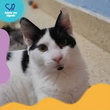
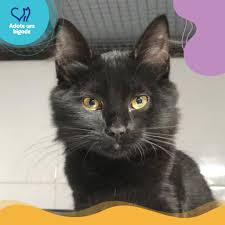
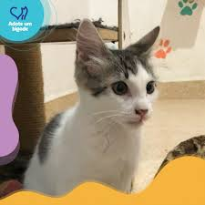

A vida é melhor com um bigode!
A ONG "Adote um Bigode" é dedicada a encontrar lares amorosos para gatos abandonados. Cada gatinho merece uma segunda chance, e você pode fazer a diferença na vida de um deles.
Nossos Bigodes para Adoção

Milo
Milo é um gatinho calmo e carinhoso, ideal para quem busca companhia tranquila. Adora tirar cochilos ao sol.
Adotar Milo

Luna
Luna é super brincalhona e curiosa. Ela tem energia de sobra e adora explorar cada canto da casa.
Adotar Luna

Simba
Simba é um gato sociável e dócil. Se dá bem com outros animais e crianças. É o amigo perfeito para toda a família.
Adotar Simba